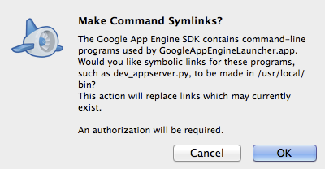
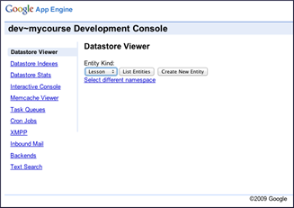

Desarrollar con Google App Engine
Si no está familiarizado con Google App Engine (GAE), pero sabe algo acerca de la computación en nube, lea ¿Qué es Google App Engine? Si usted es completamente nuevo a la computación en nube, así, una introducción más fácil a la nube y puede GAE se encuentran en esta Introducción a Google App Engine.
Usted no necesita ser un experto para trabajar con GAE desarrollador del curso. Sólo hay algunas cosas que usted debe conocer durante el desarrollo del curso. Gran parte de esto se discute en otras páginas. Lo resumiré aquí.
Esta página describe el uso de GAE en el desarrollo. Para obtener información sobre cómo trabajar con ella para desplegar su curso y modificarlo después de la implementación, consulte Despliegue su aplicación.
Nota: Algunas de estas páginas se refieren a un "shell o símbolo del sistema". Si no estás seguro de lo que eso significa, consulte ¿Qué es un "shell o símbolo del sistema"?
- Las cuotas y facturación: Importantes
- Descargar e instalar Python 2.7
- Compruebe en Mac, Linux u otros sistemas compatibles con POSIX
- Compruebe en PC
- Obtener Python
- Descargue e instale GAE
- Inicie el servidor de desarrollo
- Desde el Launcher (PC, Mac)
- Desde una línea de comandos o el comando
- Desde un indicador de shell o comando, para permitir el acceso remoto
- Detenga el servidor de desarrollo
- Desde el Launcher (PC, Mac)
- Desde el Administrador de tareas (PC)
- Desde un shell (Mac, Linux u otro sistema compatible con POSIX)
- Ver la consola de administración GAE
- Modifique su aplicación y ver los efectos
- Haga los cambios mientras el servidor local está ejecutando
- Reinicie el servidor local y volver a cargar todos los datos
- Crear un servidor de pruebas en producción
- Crear varias versiones
- Cambiar la versión predeterminada
- Marca "en construcción" y "últimas" versiones
- Ocultar el curso de los motores de búsqueda
- Restringir el acceso a su curso
- Ejecutar pruebas Curso Builder
- Solución de problemas
- Desarrollo servidor no se iniciará
- No se puede conectar a cargar los datos
- GAE documentación oficial
Las cuotas y facturación: Importantes
El uso de GAE para su curso puede incurrir en algunos costos. Actualmente, cada aplicación GAE puede consumir un cierto nivel de recursos informáticos de libre, controlado por un conjunto de límites. Si necesita recursos por encima de estos límites, podrás cambiar a una aplicación de pago para establecer un presupuesto diario recurso. Cuando se convierte a una aplicación de pago que pasará un mínimo de $ 2.10/week.Esto le permite adquirir recursos adicionales cuando sea necesario.
Es difícil predecir de antemano los costos para su curso, como GAE tiene una estructura de costos muy complejo (ver Recursos facturación y elaboración de presupuestos y cuotas para los detalles). Es probable que cualquier curso de tamaño significativo incurrirá en costes. Para efectos comparativos ásperos, el curso y los aranceles Buscando a cargo de Google incurrido en cargos facturables de aproximadamente $ 20/día para apoyar un curso de matrícula de 150.000 estudiantes. Hemos hecho pruebas que sugieren que el código podría apoyar un curso de hasta 300 estudiantes de forma gratuita. Esta cifra no es una garantía y depende de un conjunto bastante complejo de variables y patrones de uso, tales como matrícula, compromiso, deserción, cambios de código, y así sucesivamente.
Recuerde que usted puede comenzar el desarrollo y las pruebas de su curso de forma gratuita, utilizando el servidor de desarrollo descargado (desde el Google App Engine SDK) y el cupo libre inicialmente proporcionada por GAE para las aplicaciones implementadas. Este contingente libre es bastante limitado y es poco probable que apoyen una matrícula curso de tamaño considerable.
También tenga en cuenta que usted puede controlar su costo mediante el establecimiento de un presupuesto máximo diario, que será la culminación de sus costos (y su cuota) por día. Sin embargo, esto puede conducir a su curso no esté disponible para el resto de cualquier día en que se exceden su presupuesto.
Descargar e instalar Python 2.7
Asegúrate de que tienes Python 2.7 en su sistema. Para saber si lo haces...
Compruebe en Mac, Linux u otros sistemas compatibles con POSIX
En Mac, Linux u otros sistemas compatibles con POSIX, abra una terminal y escriba:
que python
Si Python 2.7 está instalado, usted debería ver algo similar a una de las siguientes acciones:
/
Library/Frameworks/Python.framework/Versions/2.7/bin/python
/ Usr / local / bin / python
El primero de éstos indica la versión de Python. El segundo no lo hace. En ese caso, es necesario comprobar para ver si usted tiene la versión correcta de Python, con el siguiente comando:
python-V
La salida de este comando es similar a la siguiente:
Python 2.7.3
Compruebe en PC
En un PC, abra un símbolo del sistema y escriba
pitón
Si está instalado Python, deberías ver algo similar a:
Python 2.6.4 (r264: 75708, Oct 26
2009, 07:36:50) [MSC v.1500 64 bit (AMD64)] en win32
Escriba "help", "copyright",
"créditos" o "licencia" para obtener más información.
>>>
Esto inicia el intérprete de Python e indica la versión. Si no está instalado Python, verá:
'Python' no se reconoce como un
comando interno o externo,
programa o archivo por lotes.
Obtener Python
Si usted no tiene Python en absoluto o si tiene la versión incorrecta, visite el general Python 2.7 página de descarga para obtener la versión correcta para usted. Es posible que desee simplemente descargar la versión de producción actual para la plataforma. (Python 2.7.3 es la última en el momento de escribir este artículo.)
Descargue e instale GAE
Siga este enlace para descargar el SDK de GAE para Python para la plataforma.
- PC: Ejecute el instalador msi descargado haciendo doble clic. Siga todas las instrucciones que aparecen en pantalla. En la pantalla que pide la carpeta de destino, asegúrese de que el camino producto Añadir a la ruta de usuario está activada. Esto es necesario para las herramientas de línea de comandos para que funcione correctamente. Una vez completado, tendrá que buscar el icono de Launcher GAE en el escritorio o ser capaz de encontrarlo a través de Inicio -> Programas.
- Mac: Abra el dmg descargado y arrastre el icono de GAE en la carpeta Aplicaciones.. De manera opcional, abra la carpeta Aplicaciones y arrastre el icono GAE a tu Dock para que pueda iniciar el Selector de GAE con mayor comodidad. Poner GAE en la carpeta Aplicaciones también instala las herramientas de línea de comandos.
- Linux u otro sistema compatible con POSIX:. Después de descargar el archivo zip, vaya al directorio en el que desea instalar GAE. Al descomprimir el archivo, se crea un subdirectorio llamado google_appengine. Añadir el directorio a la ruta de su intérprete de comandos para que pueda encontrar las herramientas de línea de comandos cuando usted los necesita.
En el desarrollo de GAE, usted tiene la opción de llevar a cabo tareas administrativas mediante una interfaz gráfica de usuario (GUI) o una interfaz de línea de comandos tradicional. La interfaz gráfica, llamada Launcher, está disponible para los usuarios de PCs o Macs. Herramientas de línea de comandos están disponibles en cualquier sistema basado en POSIX, como Mac OS X o Linux. El SDK de GAE para Python incluye ambas herramientas.
Inicie el servidor de desarrollo
El servidor de desarrollo es donde puede modificar y probar la aplicación antes de soltarlo a la producción.
Desde el Launcher (PC, Mac)
Para iniciar el servidor de desarrollo del programa de ejecución:
- (Sólo Mac) La primera vez que inicie el Lanzador, es posible que vea un cuadro de diálogo que le pregunta acerca enlaces simbólicos:

Para GAE para el trabajo, usted debe estar de acuerdo para establecer los
vínculos simbólicos.
- Seleccione su aplicación.
- Cuando está
seleccionado, haga clic en el botón Ejecutar para iniciar el servidor (por esa
aplicación).
Una vez en el botón Examinar está activada, el servidor está listo para aceptar peticiones. - Haga clic en el
botón Examinar para visitar la aplicación en un
navegador web.
Debería ver la página de inicio de sesión para el servidor.

- Si no aparece la página de inicio de sesión, lea Solución de problemas.
- Si usted ve la página de inicio de sesión, se puede utilizar cualquier nombre de usuario que desee, lo que es el inicio de sesión para el servidor de desarrollo, no tiene por qué coincidir con cualquier dirección de correo electrónico real.
Por otra parte, debido a que la versión de línea de comandos tiene más opciones, es posible que desee ejecutar el servidor de desarrollo de su concha o símbolo del sistema.
Desde una línea de comandos o el comando
Abra un shell o el intérprete de comandos. En la ventana:
- Cambie el directorio a la que se ha especificado como la ruta para su aplicación.
- El servidor con
el siguiente comando:
dev_appserver.py.
Tenga en cuenta que el punto al final de este comando es necesario. - A medida que el
comando se pone en marcha, es posible ver algunas advertencias puede pasar
por alto y preguntas que debe responder.
Una vez que la aplicación está configurada, se ve una referencia de URL para el nombre de host y el puerto que utiliza para conectarse a la aplicación desde un navegador web. Típicamente, esta URL es http://localhost:8080, pero el número de puerto (8080) puede ser diferente. - Abra una ventana del navegador y vaya a la dirección URL. Debería ver la página de inicio de sesión para el servidor (como se muestra arriba para un PC).
- Si no aparece la página de inicio de sesión, lea Solución de problemas.
- Si usted ve la página de inicio de sesión, se puede utilizar cualquier nombre de usuario que desee, lo que es el inicio de sesión para el servidor de desarrollo, no tiene por qué coincidir con cualquier dirección de correo electrónico real.
Desde un indicador de shell o comando, para permitir el acceso remoto
Por defecto, su aplicación sólo está disponible en la máquina en la que se inicia. Para tener acceso a su servidor de desarrollo desde otra máquina en la red, debe solicitar esto a través de la línea de comandos. Inicie el servidor de desarrollo con el siguiente comando:
cd AppPath
dev_appserver.py. -Un 0.0.0.0
Donde AppPath es el directorio que contiene la aplicación.
Detenga el servidor de desarrollo
Desde el Launcher (PC, Mac)
Si ha comenzado el servidor de desarrollo del lanzador, se puede dejar allí:
- Seleccione su aplicación.
- Cuando está seleccionado, haga clic en el botón Detener para iniciar el servidor (por esa aplicación).
Una vez que el icono a la izquierda del nombre de la aplicación es de color gris, el servidor de desarrollo se detuvo.
Desde el Administrador de tareas (PC)
Si ha comenzado el servidor desde un símbolo del sistema en un PC, abrir el Administrador de tareas de Windows.
- En la ficha Aplicaciones, busque la tarea que se ve así:
Símbolo del sistema - dev_appserver.py. - Seleccione la línea para esa tarea.
- Haga clic en Finalizar tarea.
Desde un shell (Mac, Linux u otro sistema compatible con POSIX)
Si ha comenzado el servidor de desarrollo de un proyectil, se puede dejar allí:
Utilice el comando ps para encontrar el número de proceso asociado con el servidor y luego matar a ese servidor.
ps x | grep dev_appserver
PID TTY CMD TIEMPO
25603 ttys000 0:00.07-bash
25993 ttys000 0:00.71 /
Library/Frameworks/Python.framework/Versions/2.7/Resources/Python.app/Contents/MacOS/Python
/ usr / local / bin / dev_appserver.py.
matar 25993
Ver la consola de administración GAE
Cuando GAE comienza su aplicación, sino que también inicia una consola de administración asociada. Si su aplicación está disponible enhttp://localhost:/8080, su consola de administración está en http://localhost:8080/_ah/admin.
Desde la consola, se puede ver y modificar el contenido de su almacén de datos.

Modifique su aplicación y ver los efectos
Mientras trabajaba en su aplicación, hay varios lugares que usted puede cambiar la información. Los cambios comunes incluyen:
- Cambio course.yaml course.yaml archivo.
- JavaScript: JavaScript o cambio de actividad de evaluación de los archivos en los directorios activos / js.
- Imagen: Cambio de archivos de imagen en los activos / img directorio.
- CSV: página de Cambio de casa o la información de lección en los archivos de datos / o datos unit.csv / lesson.csv.
En ocasiones, puede optar por modificar también los archivos HTML y Python. Las modificaciones de estos archivos se desanimen. Estos archivos van a cambiar en el futuro y puede ser difícil para que usted pueda portar los cambios en la futura versión de desarrollador de curso.
Haga los cambios mientras el servidor local está ejecutando
Cuando se realizan cambios en los archivos en el directorio de datos, archivo o directorio course.yaml puntos de vista, mientras que el servidor local está ejecutando, los cambios aparecen inmediatamente. Simplemente vuelva a cargar las páginas afectadas y los cambios son visibles. Tenga en cuenta que los archivos JavaScript o imagen ubicadas en activos pueden almacenar en caché en el navegador. Borrar la caché del navegador para ver los cambios.
Reinicie el servidor local y volver a cargar todos los datos
Para borrar y volver a cargar todos los datos, es necesario detener el servidor de desarrollo, reinícielo limpiar los datos antiguos, volver a cargar los nuevos datos, y luego decirle a GAE para empezar a utilizar los nuevos datos...
- Detener el servidor de desarrollo depende de cómo empezó:
- Si ha iniciado el servidor desde el Launcher, vaya a la aplicación Launcher y dejar de él.
- Si ha comenzado el servidor desde un símbolo del sistema en un PC, abrir el Administrador de tareas de Windows y en la pestañaAplicaciones, busque la tarea que se ve como el símbolo del sistema -. Dev_appserver.py Seleccione la tarea y haga clic enFinalizar tarea.
- Si ha iniciado
el servidor desde un shell en Mac, Linux u
otro sistema compatible con POSIX:
ps x | grep dev_appserver # Encuentra el número de proceso
30849 S000 S 0:00.85 / Library/Frameworks/Python.framework/Versions/2.7/Resources/Python.app/Contents/MacOS/Python / usr / local / bin / dev_appserver.py.
30856 S000 R + 0:00.01 grep dev_appserver
matar 30849 - Usted puede comenzar su servidor de desarrollo en el Iniciador o la línea de comandos. En cualquier caso, usted debe estar seguro de borrar los datos antiguos:
- Para comenzar desde el Launcher:
- Haga doble clic en el nombre de la aplicación para obtener el cuadro de diálogo Configuración.
- En el área de inicio Configuración, seleccione Clear almacén de datos en el
lanzamiento.
(Este es un lugar pegajoso. Una vez que se haya definido, cada vez que vuelve a lanzar la aplicación, GAE despeja el almacén de datos.) - Haga clic en Actualizar.
- De vuelta en el Programa de inicio, haga clic en Ejecutar para reiniciar la aplicación.
- Para empezar
desde la línea de comandos:
cd AppPath
dev_appserver.py - clear_datastore.
donde AppPath es el directorio que contiene la aplicación. Tenga en cuenta que el punto al final de este comando es necesario.
Crear un servidor de pruebas en producción
Es posible que desee probar su curso en el entorno de producción antes de hacerla pública. En lugar de tener un curso verdaderamente privadasen la producción, hemos encontrado que es suficiente para tener una versión separada de la cancha en un relacionado, pero URL sin publicidad,.La clave es que permite GAE versiones de su aplicación y proporciona una URL distinta para cada versión. (Para más detalles, consulteSolicitudes y Dominios).
Recuerde que si el nombre de la aplicación es MYCOURSE, está disponible en http:// MYCOURSE. Appspot.com. Usted puede utilizar el campo de versión en app.yaml para crear e implementar una segunda versión de la aplicación. En esta situación, se obtiene una URL específica para esa versión. Por ejemplo, si especifica versión: la última, que se implementa a http://latest MYCOURSEappspot.com...
Una advertencia: De forma predeterminada, todas las versiones desplegadas de una aplicación utiliza el almacén de datos misma. Es decir, que todos compartimos la misma lección, unidad, y las entidades estudiantiles. Puede utilizar diferentes espacios de nombres para cambiar este comportamiento, pero eso es algo excesivo si lo que desea es un servidor de prueba antes del lanzamiento de su curso.
Esta sección habla sobre detalles de la creación separada temporalmente pública "en construcción" y temporalmente ocultos "últimas" versiones de su curso en la producción.
Crear varias versiones
¿Qué significa para crear versiones de una aplicación GAE?
Cuando se carga una aplicación en GAE como se describe en Suba su aplicación, decide qué aplicación se basa en el parámetro deaplicación en app.yaml.
Suponga que tiene dos directorios diferentes, cada una de las cuales contiene el código para un curso de desarrollador de curso y cada uno de sus archivos app.yaml tiene el mismo valor para el parámetro de aplicación. Si ejecuta appcfg.py subir en ambos de estos directorios, cargas GAE ambas aplicaciones a la producción y los considera la misma aplicación.
- Si el valor del parámetro de versión es la misma en ambos archivos app.yaml, a continuación, App Engine considera que hay solamente una versión de la aplicación y sobrescribe la primera carga con la segunda.
- Si el valor del parámetro de versión es diferente en los archivos app.yaml, a continuación, App Engine considera que hay dos versiones de la aplicación.
- El primero que sube es la versión predeterminada. Esa versión está disponible en MYCOURSE http://. Appspot.com y enVERSION.MYCOURSE http://. Appspot.com, donde VERSION es el valor del parámetro de versión.
- La segunda es que subas una versión no-default. Sólo está disponible en http:// OTHERVERSION.MYCOURSE. Appspot.com, dondeOTHERVERSION es el valor de su parámetro de versión.
Nótese, por cierto, que una versión no tiene que ser un número, sino que puede ser cualquier cadena alfanumérica (sin espacios).
Cambiar la versión predeterminada
Si no hace nada especial, la primera versión de una aplicación que se carga sigue siendo la versión predeterminada (es decir, la versión que se obtiene cuando se entra APPID http://. Appspot.com). Las versiones posteriores no automaically lo sustituyen. Puede cambiar la versión predeterminada a ti mismo:
- Visita http://appengine.google.com .
- Elige tu app.
- Haga clic en Versiones en la barra de navegación izquierda.
- Elija el botón de radio para la versión que desea que sea el predeterminado.
- Haga clic en Establecer como predeterminado.
Marca "en construcción" y "últimas" versiones
Para crear un "en construcción" versión pública como predeterminado temporal y una "última" versión oculta como una versión de trabajo, siga pasos similares a los siguientes:
- Haga dos directorios que contienen la aplicación de ejemplo.
- Edite el archivo app.yaml en cada uno de ellos.
- En el directorio temporal para el público "en construcción" versión, especifique mycourse como el valor de la solicitud y especificarunderconstruction como el valor de la versión.
- En el directorio de la versión de trabajo, especifique mycourse como el valor de la última aplicación y especificar que el valor de laversión.
- En el directorio de construcción bajo,
- Sustituir todo
el contenido de puntos de vista con course.html /
<html> <body> realmente en construcción. </ body> </ html> - Vuelva a
colocar el texto en las vistas /
register.html con
En construcción. - En el directorio de versión de trabajo, hacer todo el trabajo que usted necesita para crear su curso.
- Sube ambas versiones de producción, como se describe en Subir su aplicación, haciendo que la aplicación en el directorio de construcción bajo la versión predeterminada, como se ha descrito anteriormente.
- Prueba de distancia.
- Cuando esté listo para lanzar la aplicación, ocultar el "en construcción" versión cambiando la versión predeterminada para su versión de trabajo, lo que hace que un visible.
Ocultar el curso de los motores de búsqueda
Para reducir aún más la probabilidad de que alguien tropezar con su curso, puede crear un archivo robots.txt archivo para indicar a los motores de búsqueda como motor de búsqueda de Google para hacer caso omiso de sus páginas.
Para agregar un archivo robots.txt para su aplicación mediante la creación de ese archivo y modificar app.yaml saberlo.
1. Cree un archivo robots.txt en el nivel superior de su directorio de la aplicación (el mismo lugar que contiene app.yaml). En robots.txt, especifique:
User-agent: *
Disallow: /
Esto le indica a los robots (como los robots de Google que rastrean la web para crear su índice) para ignorar todo en este sitio.
2. En app.yaml, la sección de los controladores se ve así:
manipuladores:
- Url: / remote_api
script: $ PYTHON_LIB / google / appengine / ext / remote_api / handler.py
login: admin
- Url: / _ah / dev_admin (/ *.)? # Proporciona consola interactiva
script: $ PYTHON_LIB / google / appengine / ext / admin
login: admin
seguro: siempre
- Url: / *.
script: main.app
Agregar una nueva entrada a la parte superior de la sección de controladores de la siguiente manera:
- Url: / robots.txt
static_files robots.txt:
subir: robots.txt
Más tarde, cuando se suelta el supuesto, si usted quiere que sea localizable, debe revertir este cambio: eliminar la entrada de app.yaml y eliminar el archivo robots.txt.
Restringir el acceso a su curso
Usted puede decidir que simplemente tomar su curso más difícil de encontrar no es el adecuado. Es posible que desee restringir efectivamente el acceso a un conjunto específico de probadores. Para ello, debe escribir nuevo código Python. Nosotros no proporcionamos este código para usted, pero la idea básica es descrita aquí.
Cada vez que alguien viene a cualquier URL en su curso, desarrollador del curso se da cuenta de si esa persona ya está registrado. Si no es así, Campo Builder muestra la página de registro. La clase RegisterHandler (definido en controllers / utils.py) determina lo que sucede en la página de registro.
Antes de realmente hacer que la página de registro, el método get RegisterHandler de comprobación para ver si la persona ya está registrado. (Para ello, puedes volver a intentarlo, en caso de que la persona fue directamente a la página de registro en lugar de ser redirigido allí desde otra página.)
Si la dispersión es registrada, se muestra la página de inicio del curso. Si la persona no está registrada, se visualiza la página de registro.
En lugar de inmediato mostrando la página de registro, puede añadir algo de código adicional al método get. En ese código, comprobar si la persona está en la lista de probadores especificadas (la "lista blanca"). Si la persona está en la lista blanca, muestre la página de registro. Si no, mostrar una página diferente que dice "Lo siento. Curso cerrado". o algo por el estilo.
Usted puede simplemente crear la lista blanca como un conjunto de direcciones de correo electrónico.
Ejecutar pruebas Curso Builder
Generador de curso contiene un conjunto de pruebas funcionales para su código fuente. Si realiza cambios significativos en el código fuente, considere ejecutar estas pruebas. En función de los cambios, es posible que también tenga que modificar las pruebas.
Antes de poder ejecutar las pruebas:
- Instalar Python WebTest. Para ello, siga las instrucciones en Probar aplicaciones con WebTest .
- Añadir WebTest a la ruta Python.
Una vez que tenga WebTest instalado, ejecute las pruebas con los siguientes comandos:
cd AppPath
python. / tests / suite.py
Donde AppPath es el directorio que contiene la aplicación.
Solución de problemas
Desarrollo servidor no se iniciará
Si no ve la página de registro cuando se inicia el servidor de desarrollo, por primera vez, puede haber un error en alguna parte.
Si usted comienza su aplicación desde la línea de comandos, mensajes de error aparecen en la consola. Si usted comienza su aplicación en el Iniciador, aparecen mensajes de error en los registros. Para ver los registros, haga clic en Registros en la barra de tareas del lanzador.
Un problema común es que, a pesar de que ha descargado Python 2.7, GAE no se dé cuenta. En este caso, el registro indica que o bien no se está ejecutando Python 2.7 o va acompañado de advertencias sobre el uso de un tiempo de ejecución más antigua que es el tiempo de ejecución de la producción.
En esta situación, es necesario especificar manualmente la ruta de Python 2.7. Para ello:
- En primer lugar, averiguar lo que ese camino es el siguiente:
- Abra una línea de comandos o el comando.
- Ejecute el comando que Python
- Copie la ruta que aparece (por ejemplo, / Library/Frameworks/Python.framework/Versions/2.7/bin/python)
- En el menú GoogleAppEngineLauncher, elija Preferencias.
Aparecerá un cuadro de diálogo. - En la línea Ruta de Python, escriba la ruta de acceso citadas anteriormente.
No se puede conectar a cargar los datos
Al introducir sus credenciales, puede recibir el siguiente error:
urllib2.URLError: error <urlopen [Errno refused> conexión 61]
Si lo hace, entonces usted ha olvidado de iniciar el servidor de desarrollo.
GAE documentación oficial
Hay una gran cantidad de documentación oficial para GAE.